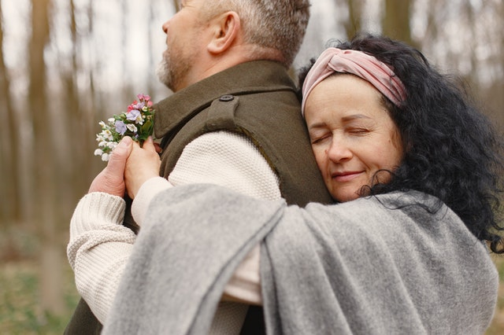
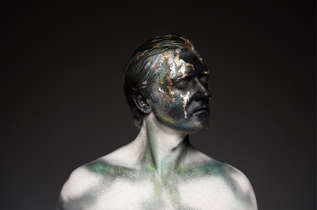

The Types in Detail
The Types
in Detail

Type One - The Reformer

Type Two - The Helper

Type Three - The Achiever

Type Four - The Individualist
Type Five - The Investigator
Type Seven - The Enthusiast

Type Eight - The Challenger

Type Nine - The Peacemaker
Previous
Next
Enneagram Type One
High Level Description
Enneagram Type Ones hold others and themselves to a high standard. They believe
that there is a correct way to do things, are highly rule-oriented and are exceptionally
detailed.
Although others might view Ones as being hard on those around them, Ones are in fact
harder on themselves than anyone else.
Deepest Fear
Ones fear being seen as morally flawed or 'bad' people. They deal with this by imposing rigid sets
of rules on themselves as well as being highly self-critical.
Core Motivation
Ones constantly work towards being just, fair and exemplary people. They are always looking to do
things in the most 'correct' way possible.
Key Personality Traits
- Serious and straightforward during conversation.
- Attuned to practicality and frugality.
- Hardworking and diligent as employees.
- High internal standards.
- Rigidity in plans and decisions.
- Intense ability to concentrate.
- Natural talent for teaching and instructing.
Type Ones in Depth
"Perfectionists are responsible and serious-minded pragmatists. They want to find purpose in their lives,
in particular the ability to improve the welfare of people and make things better for the greater good.
To do this, they use their best judgment to find solutions that can be applied in the real world. They
have a deep appreciation and interest in ethics, and frequently spend time evaluating and adjusting their
moral compass as necessary.
Often, Ones have a clear life mission outlined in their mind, and they work very hard behind the scenes to
transform that powerful vision into reality - with a strong sense of duty and tenaciousness. Quiet and
controlled, they will follow through with their words and commitments.
Perfectionists are willing to go the extra mile to ensure their work is top-notch and curated to perfection.
They take great pride in crafting streamlined schedules and plans to carry out tasks in the most efficient
manner possible — optimization is a lifestyle choice.
Within the structure of the Enneagram, Ones belong to the “body-based” triad, along with Type Eight and
Type Nine. This triad focuses on the core emotion of anger, which Type Ones cope with by designing their
lives around order and control.
The Perfectionist feels that if they have everything organized and under control, they will not have to
worry about negative emotional experiences like anger and frustration. Because this type sees anger as
“wrong,” they will repress it, which can ultimately lead to feelings of resentment, self-loathing and
regret.
Type Ones often grow up in environments where there is a lot of chaos and uncertainty. Because of this,
Type Ones often feel responsible for holding everything together. As long as they can maintain order,
the One believes that everything will be “good.”
Because Ones believe they are always right, they can be overly critical of both themselves and others.
Healthy Ones learn to accept imperfection and accept themselves and others as they are, rather than focus on
how they “should” be."
Enneagram Type Two
High Level Description
Enneagram Type Twos define themselves by the amount of value they
can add to other people's lives. They desire to be needed and loved
by those around them. Twos will help wherever they can and will very seldom
accept refusal of their help.
Deepest Fear
Twos fear being alone and unneeded by their loved ones. They deal with this fear
by inserting themselves into the lives of others and making themselves
an integral part of them such that they can't be done without.
Core Motivation
Twos want to feel appreciated and needed. This drives them to be kind and express
love towards others.
Key Personality Traits
- Warm smile and eyes.
- Approachable, radiates kindness.
- Vocal volunteer or activist.
- Excellent team player.
- Caring and gentle.
- Nurturing and patient.
- Smooth, flowing movements.
Type Twos in Depth
"Givers are highly empathetic and caring individuals who put others’ needs above their own. They have
intuitive abilities to anticipate the emotional gaps of others and support them.
They find great joy in being available and are seen as a source of encouragement or a shoulder to cry on.
Through thick and thin, they’re the ride-or-die companion and friend.
Twos are strategic in how they form relationships. Usually open and popular, Givers find themselves in a
variety of groups and are liked by many. Their encouraging and supportive nature draws in people from all
stages of their lives.
Givers are motivated by their desire to gain approval from other people, often through indirect methods.
Twos have an unconscious ulterior motive in their acts of kindness, and often assume others are the same.
An unhealthy Two may look like a person who is selfless in a superficial way. Or someone who supports and
gives to others at the expense of harming themselves or another person, such as by enabling an addict.
Enneagram Twos are part of the “heart-based” triad of the Enneagram, along with Type 3s and Type 4s. This
triad focuses on the emotion of sadness as a result of feeling like the individual is not loved for who they
really are.
As children, Twos often grow up in environments where they feel like their basic emotional needs are not
met.
So they learn how to adapt to others’ expectations early on and repress their own desires in an effort to
support other people.
Healthy Type Twos are able to serve others while also meeting their own needs. They also know how to love
and
accept themselves as they are, and rely less on approval from other people."
Enneagram Type Three
High Level Description
Type Threes define themselves through their achievements. On the surface Threes come across as confident
ambitious and success-driven. However, on the inside Threes generally doubt their worth and look to
remedy this by proving themselves through their accomplishments.
Deepest Fear
Threes fear being perceived as less than significant and are terrified of failure. They deal with this by
finding
ways to 'win' and prove their worth.
Core Motivation
Threes want to be admired. This need drives them to succeed at anything they put their mind to.
Key Personality Traits
- Acutely aware of social niceties.
- Impressive range of accomplishments.
- Extremely busy and on the go.
- Jam-packed schedules and meetings.
- May have interests in improvisation or acting.
- Refined taste in outer appearance.
- Charismatic; makes good first impressions.
Type Three in Depth
"Polished and sophisticated, Achievers have a particular taste for the nice things in life.
They have the capacity for huge chunks of productivity to reach their goals and high standards.
Their goal is to be remembered and appreciated for their discoveries and creations — to be the best.
Smart, ambitious and typically well-dressed, Achievers hit and exceed targets left and right.
Their performance and dedication is admired by others and may even inspire them to take action.
Achievers typically have schedules chock-full of events and professional meetings to keep themselves
busy and on the go.
At their best, Achievers tend to be confident, energetic and humble role models who inspire others.
This type can be incredibly productive, even a “workaholic.” They tend to dress well and enjoy materials
and experiences that project an image of wealth or success.
An unhealthy Three may appear obsessive, self-aggrandizing, and malicious. They may throw other people
under the bus for their own advantage and appear untrustworthy.
Enneagram Threes are part of the “heart-based” triad of the Enneagram, along with Type Twos and Type Fours.
This triad focuses on the emotion of grief and struggles with not feeling loveable as they are.
As children, this type most likely learned from an early age that achievement resulted in love and praise,
so they established their identity on gaining attention in the form of success.
Threes seek to project a specific image of themselves and repress their internal feelings. This type may
struggle to understand their own emotions as they focus instead on what they want to do and achieve."
Enneagram Type Four
High Level Description
Type Fours desire to be special and unique. They are often exceptionally creative and artistic, and
express themselves outwardly through their image or persona to distinguish themselves from others. They
believe that very few people are able to understand who they really are.
Deepest Fear
Fours fear that they are innately flawed and because of this are not able to experience the same level
of happiness that others are able to. They remedy this feeling by setting themselves well apart from the
rest of society such that they can fit into their own category of society and feel more appreciated.
Core Motivation
Fours are motivated by their need to express their unique nature. They do this by venturing creative
endeavors
and over-identifying with the parts of themselves they feel are lacking.
Key Personality Traits
- Distinctive inner and outer presentation.
- Prominent artistic outlet(s).
- Quirky and endearing.
- Melancholic expression.
- Strong sense of identity.
- May feel a sense of emptiness.
- Passionate about self-expression.
Type Four in Depth
"Individualists may stand out to others from their unique choice of fashion, unconventional lifestyle and
interests or creative works.
Offbeat yet endearing, Individualists have a relentless drive to discover and understand who they truly are,
deep down. Creation — not consumption —
is the key to their well-being.
Fours spend a large amount of time reflecting on the past and using experiences and feelings as a
springboard for creative musings and new projects.
Through a process of continuous exploration of the inner self (the conscious and unconscious sides),
Individualists produce original work,
untouched by the expectations of others.
Individualists struggle with an attachment to the parts of themselves that they view as deficient. Fours
tend to over-identify as people who
are more flawed than others. They undervalue the positive aspects of their personality and idealize the
positive traits in other people.
At their best, Fours are extremely creative, compassionate and self-aware. At their worst they can be
self-victimizing and self-destructive.
Like Type Twos and Type Threes, Fours are part of the “heart-based” triad of the Enneagram. The core emotion
of the types in this triad is
sadness. Fours, Twos and Threes all struggle with feeling like they cannot be loved for who they are.
Fours, however, are the type most likely to embrace this grief, rather than repress or feel conflicted over
it. Sadness can take on a form
of identity for this type.
Individualist Fours have a deep and complex relationship with their emotions. Growth happens when Fours
learn to get out of their heads and
become open to experiencing true love and acceptance from other people."
Enneagram Type Five
High Level Description
Type Fives generally favour limiting their engagement with the outside world. Their main focus is amassing
as much knowlege as they possible can to arm themselves with the tools to face any problem they encounter.
A Five's main focus is broadening their understanding of the world and growing their intellect.
Deepest Fear
Fives fear being burdened by their own needs and the needs of those around them. They escape this fear by
isolating themselves from others and diving into their own minds and focusing on the intellectual as opposed
to
the emotional side of things.
Core Motivation
Fives feel the need to be competent and to possess large amounts of understanding about as many topics as
possible such
that they can better navigate their environment. This leads the Five to be in an almost perpetual state of
knowlege
accumulation.
Key Personality Traits
- Appears lost in thought or absentminded.
- Extremely difficult-to-crack inner world.
- In-depth knowledge on specific subjects of interest.
- Gives insightful, well thought-out responses.
- Thinks extensively before speaking.
- Has clear boundaries between family, friends and work.
- Withdrawn and extremely independent.
Type Five in Depth
"Investigators are the pioneers of independent and critical thinking. They’re inquisitive and curious about
the connections
between underlying themes and the mysteries of the universe.
Usually introverted and analytical, Investigators gather and process information to build with and
synthesize patterns and ideas.
Their work spaces are typically minimalist with the exception of a collection of items pertaining to their
core interests.
They’re also fiercely non-conformist and care little about trends or accepted ways of progressing through
the stages of life.
Type Fives are the most introverted of the Enneagram types, in the sense that they direct the most focus and
energy inward.
Rather than focusing on relationships, the Five's primary focus is on gaining knowledge.
Because they have little energy for external demands, Fives are careful to conserve their energy for the
things that matter most.
This can make the individual appear withdrawn and disinterested in outer world events.
Investigators are part of the “head-based” triad of the Enneagram, along with the Type Six Skeptic and the
Type Seven Enthusiast.
The types in this triad are motivated by their varying responses to fear. Fives attempt to avoid fear and
anxiety by withdrawing
and carefully protecting their inner resources.
Fives are self-sufficient and crave freedom and autonomy from outer world influences. However, true growth
for an Investigator
happens when they learn how to let people in and open themselves up to receiving love and support."
Enneagram Type Six
High Level Description
Sixes are driven by their desire for safety and security. They are brilliant at anticipating and avoiding
problems that might arise.
They are highly risk-averse. Sixes are vigilant and always prepare for the worst case scenario. Sixes are
also extremely loyal to those they love.
Deepest Fear
Sixes have an innate fear of being under-prepared and unable to protect themselves. This causes them to
attempt to pick out and plan
for any given outcome of an event.
Core Motivation
The Six's primary need is to feel safe and secure. They seek reassurance from those around them and have a
nearly unwavering loyalty to those they trust.
Key Personality Traits
- Strong identification with a social group.
- Organized and well-liked.
- Good at managing finances.
- Excellent team player.
- Belongs to a tight-knit group of friends.
- Clear communicators.
- Detail-oriented and precise.
Type Six in Depth
"Sixes are dedicated and responsible individuals who are keen on belonging to a social group and finding
their fit in the world.
Sixes show up in two different ways. They can either be Phobic or Counter-Phobic, which deals with their
nervous energy and how it presents itself to the outer world.
Phobic Sixes deliberately move away from the source(s) of fear, and tend to fly under the radar. They’re
open and expressive about
their vulnerabilities and weaknesses, so others can understand their situation and line of thought. This is
their prime defense mechanism to avoid being manipulated.
Counter-Phobic Sixes, on the other hand, possess a high-strung, irrational fear of fear itself — which may
paradoxically translate
to rule-breaking. They try to keep up an image of independence on the surface: a tough exterior to shield
their persistent internal uncertainty.
As a child, the Six may have grown up in an unsafe environment, had overprotective guardians, or experienced
a traumatic event that
shaped their worldview. This type sees the world as a place of danger — anything or anyone outside of the
Six’s circle of trust is a potential threat.
Sixes are extremely logical types. They are constantly strategizing and planning for future events and how
to protect themselves and
their loved ones from harm. When you think of the stereotypical “survivalist,” you are likely imagining
someone with several Enneagram Six characteristics.
The Enneagram Six is part of the “head-based” triad, along with Type Five and Type Seven. Each of these
types deal with fear as a core
emotion, but no type tackles fear as head-on as the Six does.
A healthy Six is a person you want to have on your side — they are loyal, trustworthy, honest, and
protective. When less healthy, the
Six can get in the habit of fear-based decision-making and creating self-fulfilling prophecies."
Enneagram Type Seven
High Level Description
Sevens are driven by their desire to experience everything in life to the fullest whilst constantly striving
to avoid pain and boredom.
They come across as lively, energetic, fun-loving and potentially hedonistic.
Sevens are extremely busy people often hopping from one experience to the next with the goal of wringing
every last bit of enjoyment out of every situation.
Deepest Fear
Sevens fear being trapped and unable to move onto the next best thing in life. They deal with this by lining
up as many interesting, novel and fun experiences as
they possibly can.
Core Motivation
The Seven's primary driver is to have fun and to avoid pain and discomfort.
Key Personality Traits
- Always on the go.
- Wide range of interests.
- Childlike enthusiasm and energy.
- Curious, sparkling eyes.
- Many ongoing professional and creative projects.
- Upbeat and optimistic; glass-half-full outlook.
- Well-liked and popular among peers.
Type Seven in Depth
"Wide-eyed and filled to the brim with endless energy, Enthusiasts are the playful and busy optimists of the
world.
Their relentless curiosity for new information and experiences play into their (often impressive) stories
and gift for gab.
At the end of a workday, their minds are often still buzzing with new ideas to explore.
They’re charming storytellers with a passion for many different hobbies, and see the glass as half full.
Bright and expressive,
Enthusiasts see the world as their playground and can be considered the ‘eternal children’ of the Enneagram.
Sevens seek pleasure and excitement as a way to distract from the darker, more painful aspects of life. They
belong to the “head-based”
triad of the Enneagram, along with Types Five and Six.
Unlike the Six, who face fear in a straightforward way, Sevens are motivated to repress and ignore fears in
favor of positive experiences.
On the outside, this thrill-seeking type may appear fearless, but it is when Sevens learn to embrace their
fears that they truly grow.
Upbeat and optimistic, Sevens can easily reframe negative emotions into positive ones. Internally, they
downplay negative experiences
and look for silver linings. When healthy, Sevens are extremely uplifting and inspiring people. When less
healthy, this type may show
up as out-of-touch with reality, or even narcissistic.
Sevens are often very imaginative and creative. They excel in coming up with new ideas and initiating
experiences. However, they can
struggle with focus and self-discipline."
Enneagram Type Eight
High Level Description
Eights are driven by their desire to be powerful. They come across as confident and assertive. Eights are
not conflict-averse and can
present as argumentative and intimidating to others. They stand up for what they believe in and those who
are weaker than they are.
Deepest Fear
Eights are terrified of being weak and cope with this by always staying strong and in control.
Core Motivation
Eights are motivated by their need to be independant and to have control over their environment. They resist
appearing powerless at all costs and
often reject authority.
Key Personality Traits
- Independent and self-sufficient.
- Fierce and confident look.
- Determination and stamina.
- Fiery passions and power.
- Very energetic and busy.
- Stubborn and headstrong.
- Serious about control over environment.
Type Eight in Depth
"Goal-oriented and self-competent, Challengers trail blaze boldly through all walks of life and take great
pride in their independence and sharp minds. They hold their heads up high and will pick themselves right
back up after each stumble — stronger than before.
Eights rebel against the rules of society. The opinions of others will have absolutely no effect on their
standings upon an issue, as they pride themselves on being fully capable and self-sufficient.
Strong advocates for others, Eights are concerned with justice, combating oppression, and protecting the
weak.
They view the world as made up of “strong” and “weak” people — they are strong and, therefore, are
responsible for protecting those who are not.
Eights are energetic and direct. This type is not shy when it comes to taking the lead and making tough
decisions.
They have no fear of conflict and they are not always concerned with limits or boundaries. They typically
take
charge during group projects or meetings and find themselves at ease in leadership positions.
As children, they may have been called ‘bossy’ by peers. Many Eights grow up in a conflict-heavy
environment, and
feel like they have to adopt a strong personality early in life to survive.
Challengers are part of the “body-based” triad, along with Type One and Type Nine. The core emotion
experienced by
this triad is anger. While Ones and Nines more or less repress or ignore their anger, Eights have no problem
accessing
their anger, often expressing it impulsively.
Healthy Eights are brave and charismatic leaders who stand up for themselves and others. Less healthy Eights
may ruin
relationships on their path toward power and authority. Eights grow when they learn to access their
vulnerability and weaknesses."
Enneagram Type Nine
High Level Description
Nines are constantly striving towards a state of inner-peace. They avoid conflict at all costs and are
generally very agreeable people because of this.
Although Nines don't like to cause conflict they can be exceptionally stubborn and dislike being controlled
by others and will strongly, but passively
resist this.
Deepest Fear
Nines fear pushing people away and cope with this by being overly agreeable and submitting to the needs and
wants of those around them.
Core Motivation
Nines are driven by their desire to avoid conflict and to achieve and maintain their inner-peace.
Key Personality Traits
- Calm, collected demeanor.
- Ability to defuse conflict with ease.
- Zen-like presence.
- Mellow and soothing voice.
- Wide circle of acquaintances.
- Generally liked by most people.
- Fluid, slow movements and gestures.
Type Nine in Depth
"Gentle and agreeable, Peacemakers are the skilled mediators and counsellors in a group of friends or
coworkers.
They work hard behind the scenes in order to keep the group harmony steady and flowing.
As children, they knew how to get along with each classmate, making them a great addition to any group
project.
They can easily see the many different sides to an issue and tend not to jump to conclusions quickly, if at
all.
Complacent and humble, Peacemakers are stable and gentle, willing to go the extra mile to avoid rocking the
boat.
They’re appreciative of the little things others do and the simple pleasures in life.
Nines are part of the “body-based” triad of the Enneagram, along with Eight and One. Ones resist their anger
and
focus on self-control and Eights express their anger and focus on controlling others. Nines, however, avoid
their anger and focus on maintaining inner peace.
While seemingly agreeable, Nines resist outer control like an Eight, except they do so passively. This can
result in
passive-aggressive tendencies.
Many Nines grow up in environments where they were forced into a position of mediating conflict between
parents or other
family members. Since they were surrounded by bigger emotions, they learned at a young age to devalue their
own.
Healthy Nines are exceptional mediators and persuaders that can help other people understand different
perspectives.
Less healthy Nines, however, can show up as apathetic, overly passive, and highly self-critical.
Nines grow when they learn to connect more deeply with their authentic self, prioritize their own desires,
and express their wants and needs to other people."